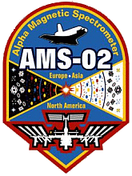

International Space Station (iss)
alpha magnetic spectrometer
AMS-02 is mounted on the Integrated Truss Structure [ITS] - Segment S3/4

AMS-02 is mounted on the Integrated Truss Structure [ITS] - Segment S3/4
The Alpha Magnetic Spectrometer [AMS] is a particle physics experiment module mounted on the ISS. It is designed to measure antimatter in cosmic rays and search for evidence of dark matter to better understand the formation of the Universe.
Using a large magnet to create a magnetic field that will bend the path of the charged cosmic particles already traveling through space, eight different instruments will provide information on those particles as they make their way through the magnet.
Armed with that information, hundreds of scientists from 16 countries are hoping to determine what the universe is made of and how it began, as the AMS searches for clues on the origin of dark matter and the existence of antimatter and strangelets. The AMS may also provide information on pulsars, blazers and gamma ray bursters and any number of phenomena that have yet to be named.
The AMS is not the only experiment looking into these concepts, there are several large, high-energy experiments here on Earth, and a number of telescopes and explorer missions studying the universe from space.
Unlike similar experiments on the ground, the AMS can detect particles of much higher energy and quantities. The Earth's atmosphere protects us from the vast majority of the cosmic particles moving through the universe.
Two AMS detectors have been built by the international consortium. A prototype designated AMS-01, was a simplified version of the detector, and flown into space aboard the U.S. Space Shuttle Discovery on STS-91 in June 1998. No antimatter was detected but the mission proved that the AMS concept worked in space. This was not an ISS mission but the last shuttle flight to the Russian Mir Space Station.
After the flight of the prototype, Ting began the development of the full research system AMS-02.
References: AMS Organization, AMS Wikipedia
In 1995, not long after the cancellation of the Superconducting Super Collider, particle physicist Samuel Ting of the Massachusetts Institute of Technology proposed the AMS. The proposal was accepted and Ting became the principal investigator. Led by Samuel Ting and Deputy Spokesperson Roberto Battiston, of the University of Perugia, Italy, the AMS team includes some 600 physicists from 56 institutions in 16 countries. The various participants built their particular contributions, which were all integrated when the AMS was built at CERN in Geneva.
The countries participating are Denmark, Finland, France, Germany, Italy, The Netherlands, Portugal, Romania, Russia, Spain, Switzerland China, South Korea, Taiwan United States and Mexico.
NASA has been a part of the AMS project since 1994, overseeing the integration of the various parts of the experiment at CERN and providing advice on making them hardy enough to survive in the extreme environments of space.
Two AMS detectors have been built by the international consortium. The first was a prototype designated AMS-01 which was flown into space aboard the U.S. Space Shuttle Discovery on STS-91 in June 1998.
After the successful flight of the prototype, Ting began the development of the full research system, designated AMS-02.
AMS-02 has been called "the most sophisticated particle detector ever sent into space" and rivals the very large detectors used at major particle accelerators. Even though it cost four times as much as any of the ground-based detectors, it is a more comprehensive detector. This means it has a better chance of discovering evidence of dark matter.
The power requirements for AMS-02 were too great for a practical independent spacecraft. It was therefore designed as an external module on the ISS which has sufficient power. The original plan was to deliver AMS-02 to the ISS by U.S. space shuttle in 2005 on station assembly mission UF4.1, but technical difficulties and shuttle scheduling issues added delays.
For several years it was uncertain if AMS-02 would ever be launched because it was not manifested to fly on any of the remaining Space Shuttle flights. After the 2003 Columbia disaster NASA decided to reduce shuttle flights and retire the remaining shuttles by 2010.
A number of flights were removed from the remaining manifest including the flight for AMS-02. In 2006 NASA studied alternative ways of delivering AMS-02 to the station, but they all proved to be too expensive.
In May 2008 it was proposed to launch AMS-02 to station on an additional shuttle flight in 2010 or 2011. Later in 2008 the U.S. government authorized NASA to add another shuttle flight to the schedule before the shuttle program was discontinued. In January 2009 NASA restored AMS-02 to the shuttle manifest.
In February 2010 AMS-02 successfully completed final integration and operational testing at CERN in Geneva, Switzerland which included exposure to energetic proton beams generated by the CERN SPS particle accelerator.
It was then shipped by specialist haulier to ESA's European Space Research and Technology Centre (ESTEC) facility in the Netherlands. Here it underwent thermal vacuum, electromagnetic compatibility and electromagnetic interference testing.
AMS-02 was delivered to the Kennedy Space Center in Florida, U.S. in August 2010 to be prepared for launch.
AMS-02 was delivered to the station by U.S Space Shuttle Endeavour (STS-134 mission) [Flight ULF6] in May 2011. On orbit Endeavour's cargo bay doors were opened and the AMS ground team turned on the experiment to ensure it had survived the launch.
The shuttle Mission Specialists then used its robotic arm to removed AMS-02 from the cargo bay and handed it off to the station's robotic arm [Canadarm2].
It was then mounted on top of the Integrated Truss Structure [ITS] on the zenith side of the Starboard 3 [S3] segment at Pay load Attachment Systems location 2 [PAS-2].
During the shuttle mission and for several months afterward, about 40 members of the AMS ground team were stationed at the Payload Operations Control Center at Johnson Space Center in Houston U.S. They monitored the experiment and analyzed the data sent down.
The AMS operations then moved back to CERN, where the AMS team continue monitoring the experiment 24 hours a day. They will gather data for as long as the space station is in orbit.
The station crew have little involvement with the AMS, but the station provides it with power and a way to send data back to scientists on the ground. Also, since AMS-02 is able to orbit as part of the station, it has no need of any independent control or maneuvering systems.
The detector module consists of a series of detectors that are used to determine various characteristics of the radiation and particles as they pass through. Characteristics are determined only for particles that pass through from top to bottom. Particles that enter the detector at any other angles are rejected. From top to bottom the subsystems are identified as:-
The Transition Radiation Detector (TRD) The first detector that a particle will pass through as it enters the AMS. It measures the velocities of the highest energy particles. It has the ability to distinguish between electrons and protons by detecting X-rays emitted by some particles. The TRD is made of 328 modules, arranged in 20 layers. When an electron passes through these layers, it will emit an X-ray. Protons will not. On the other hand, positrons, the antimatter counterpart of electrons, will emit an X-ray. Positrons have the same mass as an electron, but a positive charge, like a proton. The TRD will allow scientists to tell protons and positrons apart in the search for antimatter.
Two Time-of-Flight (ToF) detectors (one at the top of the magnet and one at the bottom) act as the AMS's stopwatch. When one is triggered by a particle entering the magnet, it starts the other detectors; when the particle exits from the opposite side, the other detectors stop. The ToF can also provide scientists information on the direction a particle is traveling, which is important for antimatter identification. It also assists in identifying the charge of a particle, which will help scientists determine which element a particle is. Each of the ToF detectors is made up of two scintillation counters. (Scintillation is a flash of light created when a particle going through the ToF emits a photon.) This allows the detectors to measure particles traveling at speeds up to 98 percent of the speed of light.
Star tracker determines the orientation of the module in space. To correlate the findings of the AMS with those of other scientific instruments in space, it is important to know where the AMS is looking as it gathers its information. To track its position and the direction its pointing, the AMS has two Star Trackers (pointed in different directions, so that when one is pointing at the sun and therefore blinded, the other can still provide information) and a GPS. The Star Trackers will take one photo of the sky in a 6-degree field-of-view per second. The photos can then be compared to stellar maps to determine the AMS's orientation. The GPS antenna is fixed on the top of the Transition Radiation Detector, and the receiver is on top of the AMS.
Without the magnet, particles would travel in a straight line through the AMS, but without the silicon trackers, we would not know the difference. There are nine tracker planes arranged throughout the AMS; one at the top, one at the bottom, and seven within the magnet. Each of them works together to provide data on the curvature of the trajectory a particle takes through the AMS, as it is influenced by the magnet. This information, when combined with the information provided by the other detectors, allows scientists to distinguish between matter and antimatter. The tracker panels are made of 2,264 double sided silicon sensors, with a total of 200,000 sensor channels. The trackers require their own radiator to keep them cool.
Mass: 8,500 kg
Power: 2,500 W
Data rate - Internal: 7 Gbit/s
Data rate - To ground: 2 Mbit/s (average)
Primary mission duration: 10 to 18 years
Magnetic field intensity: 0.15 teslas produced by a 1,200 kg permanent neodymium magnet
The original designed superconducting magnet had 2 coils of niobium-titanium at 1.8 K producing a central field of 0.87 teslas. The magnet flown with AMS-02 was changed to non-superconducting AMS-01 version to extend experiment life and to solve reliability problems in the operation of the superconducting system. About 1,000 cosmic rays are recorded by the instrument per second, generating about one GB/sec of data. This data is filtered and compressed to about 300 kB/sec for download to the operation center at CERN.
The AMS uses about 300,000 electronics channels to provide power to the detectors and record the data they collect. That is about the same number of channels in this one experiment as the rest of the station requires in total. The AMS computers were specifically designed and tested for space applications, so every piece of electronics is at least 10 to 100 times faster than any available aerospace component. The experiment will gather more than seven gigabits of data, per second. That data will then be analyzed, compressed by 650 computers onboard the station and readied for transmission to Earth at approximately six megabits per second.
Because the curvature of the particles is so crucial to the AMS experiment, it is important to know that the tracker panels are measuring the particles' paths accurately. To do so, they must be precisely aligned, or corrections must be made for any misalignment. The Tracker Alignment System monitors the positions of the trackers themselves, using 20 straight laser beams that mimic the tracks of particles. It is able to detect changes in the tracker positions of down to five micro meters or less.
The Permanent magnet bends the path of charged particles so they can be identified. Neodymium-Iron-Boron magnets are the strongest permanent magnets, providing the AMS with a magnetic field 3,000 times stronger than that of the Earth. The AMS does not draw the cosmic particles to the station, otherwise it might change the space station's orientation or draw astronauts to it on space walks. Instead, it takes advantage of the cosmic particles already traveling in the space station's path, and bends their trajectory as they pass through the magnet. The direction of the curve will provide scientist with information about the charge of the particle (whether it is positive or negative). The Permanent Magnet's strength should last through 2020, the planned life of the station.
The Anti-coincidence counter rejects stray particles that enter through the sides. Although cosmic particles will enter the AMS from all angles, only the ones that enter from the top and exit at the bottom are certain to make it through all of the AMS detectors. The instruments will not be able to gather all the necessary information on the other eight-tenths of the particles, and the extra particles traveling in abnormal directions can confuse the silicon trackers. So, rather than gather incomplete information, the Anti-Coincidence Counters act as the ToF detector for these rogue particles. However, rather than turning on the other detectors when a particle passes through it, it tells them not to track the particle.
The Ring imaging Cherenkov detector measures velocity of fast particles with extreme accuracy. The AMS has no instrument that measures a particle's mass. Instead, the mass is determined indirectly using a formula that requires the particle's curvature, its charge and its speed. The Ring Imaging Cherenkov (RICH) detector provides the speed part of the equation. The RICH is named for and makes use of the Cherenkov Effect. This describes the way particles emit cones of light when they travel through certain mediums, in this case, the RICH's radiator, at a speed somewhere between the speed of light in a vacuum and the speed of light through glass. The cone of light can take the shape of a circle or an ellipse, and the shape can be used to determine the particle's speed. The RICH is made up of a radiator plane, a conical mirror and a photon detection plane.
The Electromagnetic calorimeter measures the total energy of the particles. To determine the energy of the particles passing through the AMS, the Electromagnetic Calorimeter (ECAL) was added. The ECAL is a block of lead with thousands of fiberoptic lines running through it. Depending on the energy of a particle, when it passes through lead, it may break up and produce an electromagnetic shower or a hadronic shower. The shapes of the two showers are very different and scientists can pick out one positron from as many as 100,000 protons, or one antiproton from 100 electrons. The ECAL is made up of nine super-layers, each of which contains 11 leaves of thick lead foil alternating with layers of scintillating fibers, glued together.
The AMS-02 will use the unique environment of space to advance knowledge of the Universe and lead to the understanding of its origin by searching for antimatter, dark matter and measuring cosmic rays.
Experimental evidence indicates that our galaxy is made of matter; however, some versions of the Big Bang theory of the origin of the Universe require equal amounts of matter and antimatter. Antimatter is made up of particles identical to those of regular matter, but with opposite electric and magnetic properties.
Theories that explain this apparent asymmetry violate other measurements. Whether or not there is significant antimatter is one of the fundamental questions of the origin and nature of the Universe. Any observations of an antihelium nucleus would provide evidence for the existence of antimatter in space.
In 1999, AMS-01 established a new upper limit for the antihelium/helium flux ratio in the Universe. AMS-02 is searching with a sensitivity which is three orders of magnitude over AMS-01. This is sufficient to reach the edge of the expanding Universe and resolve the issue definitively.
The visible matter in the Universe, such as stars, adds up to less than five percent of the total mass that is known to exist from many other observations. Twenty percent of the Universe by weight is estimated to be made up of 'Dark Matter' and 'Dark Energy' makes up the balance.

The exact nature of dark matter and energy is still unknown. One of the leading candidates for dark matter is the neutralino.
If neutralinos exist, they should be colliding with each other and giving off an excess of charged particles that can be detected by AMS-02.
AMS-02 Installed on the ISS (Outlined in red) ►
Six types of quarks (up, down, strange, charm, bottom and top) have been found experimentally; however, the majority of matter on Earth is made up of only up and down quarks.
It is a fundamental question whether there exists stable matter made up of strange quarks in combination with up and down quarks. Particles of such matter are known as strangelets. These might have extremely large mass and very small charge-to-mass ratios and would be a totally new form of matter. AMS-02 may determine whether this extraordinary matter exists in our local environment.
Cosmic radiation during transit is a significant obstacle to sending humans to Mars. Accurate measurements of the cosmic ray environment are needed to plan appropriate countermeasures. Most cosmic ray studies are done by balloon-borne instruments with flight times that are measured in days and have shown significant variations.
AMS-02 will gather a large amount of accurate data and allowing measurements of the long term variation of the cosmic ray flux over a wide energy range. In addition to the understanding the radiation protection required for astronauts, this data will identify the interstellar propagation of cosmic rays.
In July 2012, it was reported that AMS-02 had observed over 18 billion cosmic rays. In February 2013, in its first 18 months of operation AMS-02 had recorded 25 billion particle events including nearly eight billion fast electrons and positrons.
It was also reported that the AMS had provided evidence about the weakly interacting massive particle (WIMP) model of dark matter.
On 30 March 2013, the first results from the AMS experiment were announced by the CERN press office. The accompanying Physics Viewpoint said that "The first results from the space-borne Alpha Magnetic Spectrometer confirm an unexplained excess of high-energy positrons in Earth-bound cosmic rays."
These results are consistent with the positrons originating from the annihilation of dark matter particles in space, but not yet sufficiently conclusive to rule out other explanations. By April 15, 2015, AMS-02 had recorded over 60 billion cosmic ray events and 90 billion by 2016.